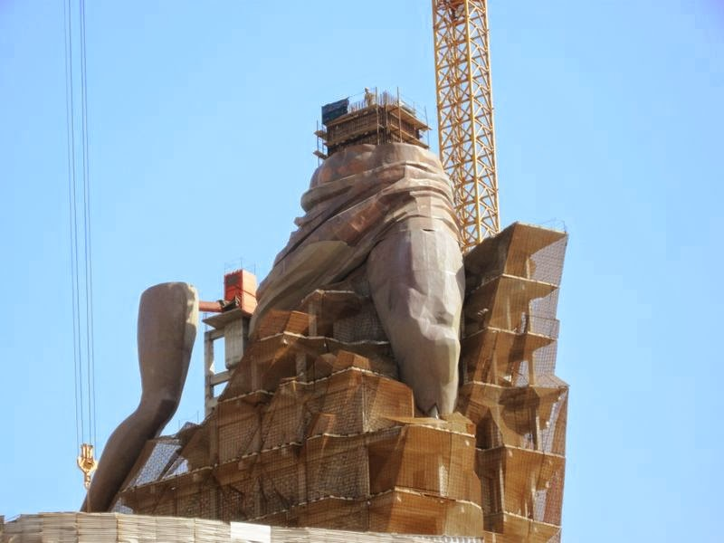
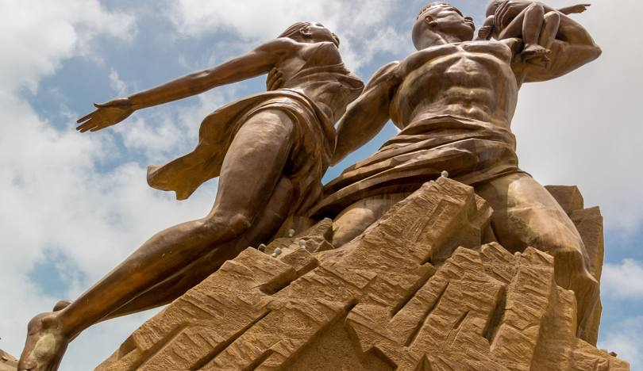
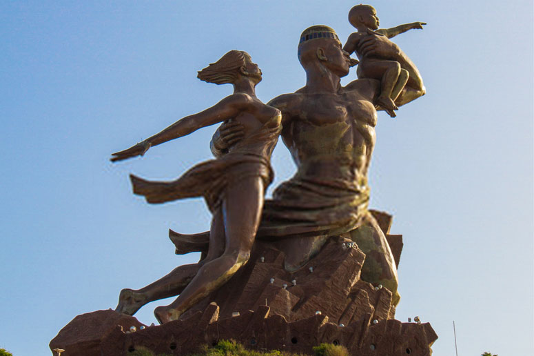
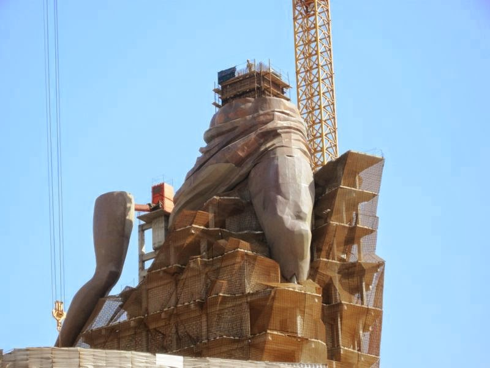
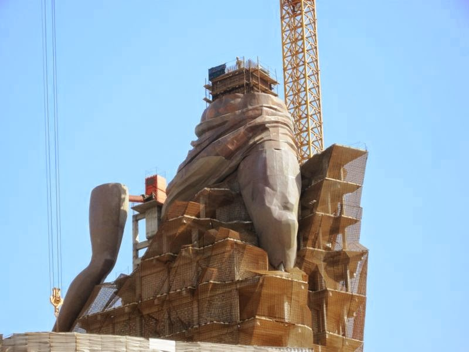
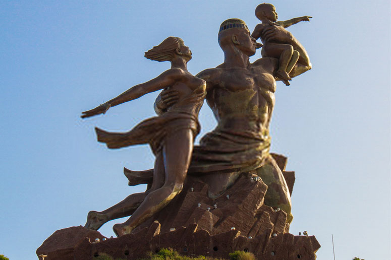
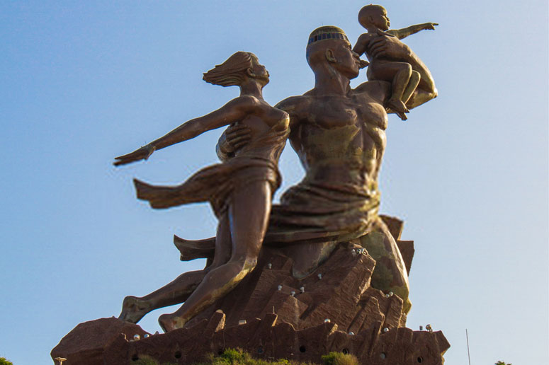

Le Monument de la Renaissance africaine est un groupe sculpté monumental, œuvre du sculpteur Virgil Magherusan, situé à Ouakam, une commune d'arrondissement de Dakar. Ce monument de 52 mètres en bronze et cuivre1, a été érigé sur l'une des deux collines volcaniques coniques qui surplombent la capitale sénégalaise, les Mamelles, la plus haute portant déjà le phare des Mamelles.
Le monument représente un couple et son enfant, dressés vers le ciel. Il est officiellement inauguré le 3 avril 2010 lors des cérémonies du cinquantenaire de l'indépendance du Sénégal.
Construction

L'ouvrage, dont les travaux ont débuté en 2002, a coûté entre 92 et 15 milliards de francs CFA3 (15 à 23 millions d'euros). Il fait partie des grands projets du président Abdoulaye Wade qui veut en faire le symbole de la « dignité du continent ». Il s'agit de montrer au travers d'une famille dressée vers le ciel, l'homme portant son enfant sur son biceps et tenant sa femme par la taille, « une Afrique sortant des entrailles de la terre, quittant l'obscurantisme pour aller vers la lumière ». Le monument figure en effet une famille africaine résolument tournée vers le Nord-Ouest.La statue aurait été conçue par le sculpteur d'origine roumaine Virgil Magherusan. Elevé sur une colline de 105 mètres avec ses 52 mètres, le Monument de la Renaissance Africaine à Ouakam, une commune de Dakar, atteint une hauteur de 157 mètres. Ce monument en cuivre et bronze est posé sur un socle de 6 810 tonnes en béton armé. Il représente une famille africaine dont un homme aux muscles saillants jaillissant du cratère d’une des collines des Mamelles. Torse nu, ce géant porte sur son bras gauche un enfant de 20 tonnes de métal tout en enveloppant de l’autre une femme de 70 tonnes. Ces gigantesques statues sont accessibles grâce à des escaliers de 198 marches. Le projet du monument a été confiée à l'architecte sénégalais Pierre Goudiaby Atepa, auteur « notamment » de la Porte du Troisième millénaire qui surplombe la route de la Corniche. L'œuvre a été « dessinée » par le président Wade qui en détient 35 % des droits d'auteur, mais l'œuvre avait été initiée par le célèbre artiste sénégalais Ousmane Sow qui s'est depuis retiré du projet à cause d'une mésentente avec Abdoulaye Wade. Sa maîtrise d'œuvre est assurée par l'atelier Mansudae de Corée du Nord5. Le paiement s'est effectué en nature, avec 30 à 40 hectares de terrain qui seront mis en valeur par un homme d'affaires sénégalais2
Selon le ministre sénégalais de la Culture et de la Francophonie, Serigne Mamadou Bousso Lèye, la durée de vie du monument serait de 1 200 ans2.
Le projet prévoyait initialement que la structure abrite un restaurant panoramique accessible par un ascenseur, mais il n'a pas vu le jour6.
Inauguration
L'inauguration du monument initialement prévue le 12 décembre 2009 a été reportée au 4 avril 2010 afin de « correspondre au 50e anniversaire de l'indépendance de nombreux États africains », selon un communiqué officiel. Le 4 avril est en effet le jour de la fête nationale au Sénégal7. Le monument a été inaugurée par le président Wade en présence d'une vingtaine de chefs d'État africains, du numéro deux du régime nord-coréen3, ainsi qu'une forte délégation du gouvernement français.
Polémique
Ce projet a fait l'objet de nombreuses critiques et a concentré les oppositions au président Wade8.
La polémique concerne notamment son coût jugé pharaonique dans un contexte de crise économique du pays8, un financement jugé par l'opposition peu transparent3 et l'annonce publique que le chef de l'État se réserverait, au titre de la propriété intellectuelle, 35 % des recettes engendrées par la visite du monument et la fréquentation des infrastructures attenantes et que son fils Karim Wade présiderait le conseil d'administration de la fondation chargée de la gestion9. Il est également critiqué que sa construction ait été menée par la dictature nord-coréenne8. Peu avant l'inauguration, des centaines de personnes ont manifesté dans les rues de Dakar pour demander la démission d'Abdoulaye Wade pour ces raisons10.
Alors que certains jugent aussi le style du monument trop stalinien ou y voient des symboles maçonniques9, d'autres le trouvent trop païen et indécent (le pagne porté par la femme fut pourtant rallongé par rapport au projet initial3) dans un pays musulman à 95 %. Le 11 décembre 2009, dans un sermon unitaire, une trentaine d'imams de Dakar et de sa banlieue ont prêché contre le monument comme contraire à l'islam et ont donné une conférence de presse pour expliquer leur position11,12.
En leur répondant, le président Wade a provoqué un incident avec la communauté chrétienne du pays et quelques troubles (violents affrontement entre jeunes chrétiens et forces de l'ordre13) en demandant aux imams pourquoi ils ne s'offusquaient pas des statues de Jésus présentes dans les églises, « Des gens adorent le Christ qui n'est pas Dieu », propos pour lesquels il a ensuite présenté des excuses3.
Des féministes ont également critiqué la position en retrait de la femme dans la sculpture8.
Présentation brève du SITE
À l’intérieur du monument il y a 15 étages. Au rez-de-chaussée se trouve un diaporama décrivant l’histoire de la construction et une fresque retraçant l’histoire de l’Afrique et de ses grandes figures, au troisième étage, une petite salle d’exposition temporaire, au quatrième, un salon d’honneur décoré par une artiste nommée Aïssa Dione. Le 15ème étage se situe dans la tête de l’homme et ses fenêtres permettent une vue superbe sur la presqu’île.


Tarifs et horaires des visites
Ouvert tous les jours de 9 heures à 19 h 45.
Enfant / résident : 500 F CFA
Adulte résident/ visite simple : 1 000 F CFA
Adulte résident / visite belvédère : 3 000 F CFA
Non résident adulte : 10 euros / 6 500F CFA
Non résident enfant : 5 euros / 3 250F CFA
NB : Les billets d’entrée sont en vente sur place.

 


 
